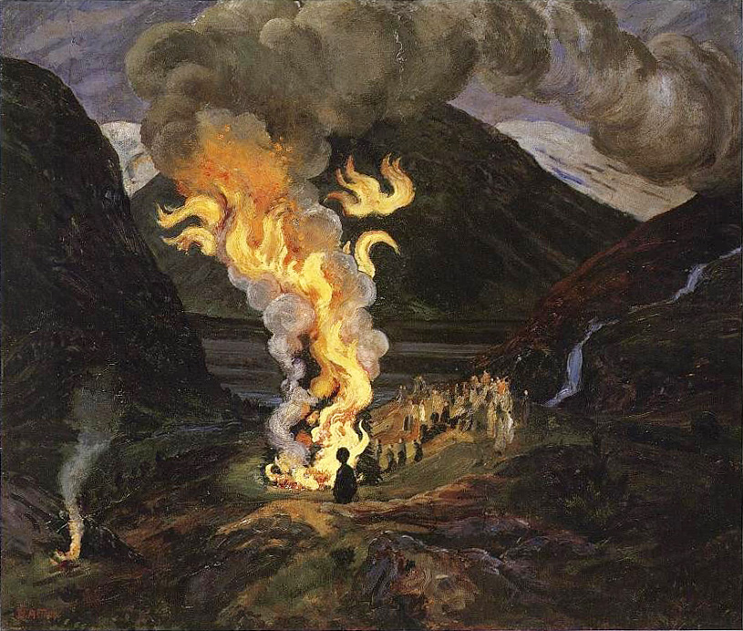
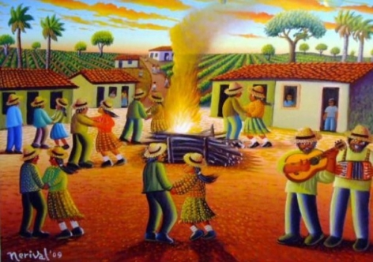

A festa junina, uma das maiores tradições brasileiras,
surgiu no período pré-gregoriano na Europa, como uma festa
pagã que comemorava a fertilidade da terra e as boas colheitas.

Essa festa sempre acontecia durante o solstício de verão,
que acontecia no dia 24 de Junho. As comemorações passaram
então a ser conhecidas como Joaninas, em homenagem a João Batista,
descrito na bíblia como aquele que batizava as pessoas para a
vinda de Jesus. Assim, virou uma festa da Igreja Católica, que
começou a prestar homenagem a três santos: no dia 13, Santo Antônio;
no dia 24, São João; e no dia 29, São Pedro.
Quando introduzida no Brasil pelos colonizadores, essas festividades
foram muito bem aceitas pelo negros e índios que aqui viviam, por serem
muito parecidas com as de suas culturas.

Aos poucos, as festas juninas foram se espalhando pelo Brasil, mas foi no Nordeste que ela ganhou
força na nossa cultura. Lá elas duram o mês todo, e são realizados vários
concursos de grupos que dançam a quadrilha, atraindo turistas de todo país.
Como Junho é um mês mais frio, fogueiras são acesas para que as pessoas se
esquentassem. Também foram introduzidas várias brincadeiras como o pau de
sebo, o correio elegante, os fogos de artifício, o casamento na roça, e muitos
outros. E a melhor parte, claro, as comidas típicas! Toda Festa Junina boa não
pode deixar faltar o bolo, a pamonha, o milho, o quentão, e claro, Paçoquita,
Mendorato e Crokíssimo, mas que doce tradição!.